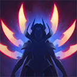

核心裝備
 三相之力
三相之力 殞落王者之劍
殞落王者之劍 死亡之舞
死亡之舞 臨界點
臨界點 守護天使
守護天使

以下為本站 7.2d 校正後的標準配置；實戰仍需依敵方陣容調整。


技能優先：Q > E > W

技能命中敵人會疊加攻速；滿層後普攻造成額外魔法傷害。
突進到敵人身上造成物理傷害；擊殺目標或命中被標記敵人時刷新冷卻。
蓄力減少受到的物理傷害，放開後向前斬擊造成物理傷害。
先後放置兩片劍刃，劍刃交會時傷害、暈眩並標記命中的敵人。
射出大量劍刃傷害並標記英雄，落地後形成劍陣，穿越的敵人會被緩速。
1技收低血兵 → 1技再次刷新 → 3技第一片 → 3技第二片暈眩 → 1技突進 → 普攻
先透過士兵疊被動並準備回程路線，三技命中標記後再突進，確保一技能夠刷新。
4技命中 → 1技吃標記 → 普攻 → 3技暈眩 → 1技再次突進
大絕標記可先刷新一次一技，接著用三技再製造標記；每次突進之間穿插普攻提高輸出。
4技多人標記 → 1技切前排 → 1技轉後排 → 2技減傷 → 3技控制 → 1技收割
不要一次把所有標記吃完，依敵方位置保留可撤退或轉火的標記；受到集火時用二技吸收物理傷害。
先用低血量士兵刷新一技並疊被動，滿層後才找長換血。三技兩片刀刃的角度比速度重要，沒有命中標記時不要把一技交到英雄身上。
邊線或河道小規模戰最能發揮連續刷新。大絕命中多人後可取得多個標記，依序突進但要保留最後一個目標作為撤退方向。
避免從正面先手吃滿控制，等隊友開戰後切入後排。二技可降低物理爆發並避免被瞬間擊殺，蓄力時間不要貪到錯過位移窗口。
對局名單是本站依英雄機制與目前配置整理的參考，不等同固定勝率。
中路優先處理爆發、控制與抗性問題；標準輸出核心不因單一威脅整套推翻。
觸發：對線或團戰有能直接貼近你的刺客／爆發核心，常在完成第一輪輸出前死亡。
魔提斯深淵提供魔防與低血量魔法護盾，比單純增加輸出更能保住進場或持續輸出。
骨甲直接降低同一名敵人接續幾次技能或普攻的傷害。
觸發：敵方有多個關鍵硬控，會讓你無法安全站位或施放完整連段。
先購買水銀飾帶取得主動解控，之後再合成水星彎刀；水銀飾帶是合成組件，不是另一件要與水星彎刀互換的成裝。
犧牲部分輸出型傳奇符文，換取韌性與緩速抗性。
觸發：敵方前排多，團戰需要你持續處理高生命目標，而不是只秒後排。
斷切能直接提高對高生命敵人的普攻傷害。
觸發：敵方治療、吸血或回復讓你的消耗與爆發很難真正壓低血線。
生化龐克鏈鋸之劍提供物攻、生命與技能加速，適合近戰物理角色補重創。
觸發：敵方核心已經針對你的主要傷害類型堆高物防或魔防。
把後期彈性位換成百分比穿透／削抗，針對已經堆出高抗性的目標，而不是單純追求面板傷害。
提醒：「坦克多」看的是高生命前排；「抗性高」則是對方已經明確堆高物防／魔防，兩種情境不一定相同。
7.2a 中路第三批正式版：技能名稱與核心機制沿用 Riot Games 台灣《激鬥峽谷》已校正資料；版本基準採官方 7.2 與 7.2a 更新公告，出裝、符文與對局方向參考 7.2a 當前中路環境後整合。Tier 維持本站既有 46 位中路正式名單評級。｜v61：完整套用阿璃中路固定母版。
本站於 2026-08-27 依 Patch 7.2d 重新檢查此配置。 Tier、出裝、符文與對局屬於 Wild Rift Guide 的整理與分析，不是 Riot Games 官方推薦；版本改動後會再依官方公告與實戰資料校正。